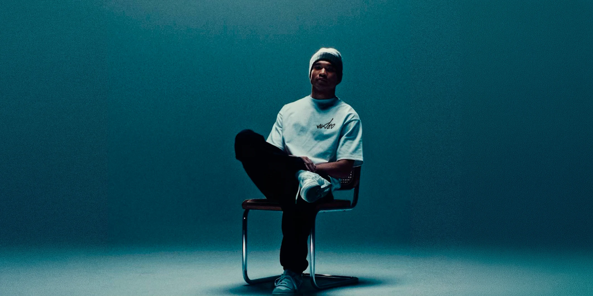

VOWED
2026
Uma marca que veste convicção. Identidade, palavras e imagens construídas para expressar uma mesma visão.
- Projeto
- Branding, conceito e expressão de marca
- Cliente
- VOWED
- Ano
- 2026
- Categorias
- Identidade Visual
Design
Fotografia - Atuação
- Branding, conceito visual e verbal, estampas e fotografia
Da essência à expressão
O projeto da VOWED conecta posicionamento, conceito visual e linguagem verbal em um universo de marca coeso. A identidade parte da ideia de viver aquilo em que se acredita, traduzindo essa atitude em símbolos, mensagens e escolhas visuais com personalidade.
A marca ganha corpo
O trabalho se desdobra no desenvolvimento de estampas, aplicações e fotografia. Da etiqueta à camiseta, da embalagem à imagem de campanha, cada elemento participa da construção de uma presença reconhecível e de uma relação consistente entre marca, produto e público.